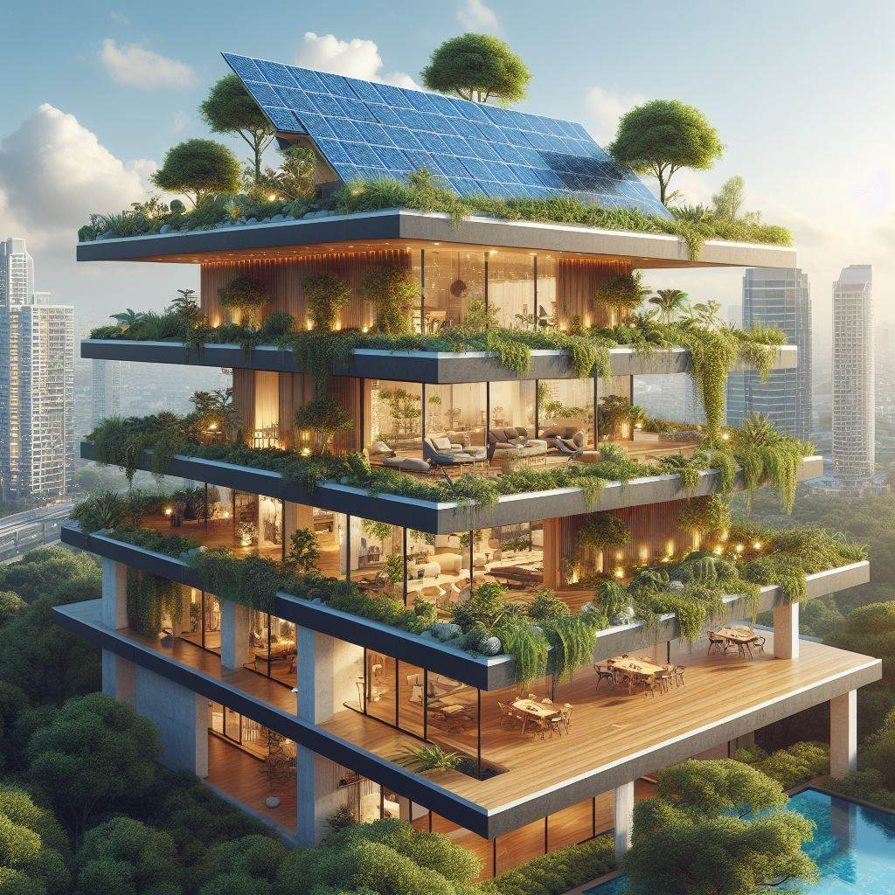
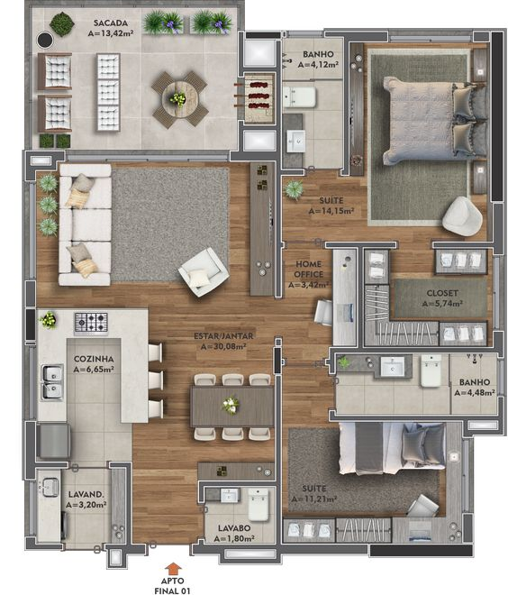
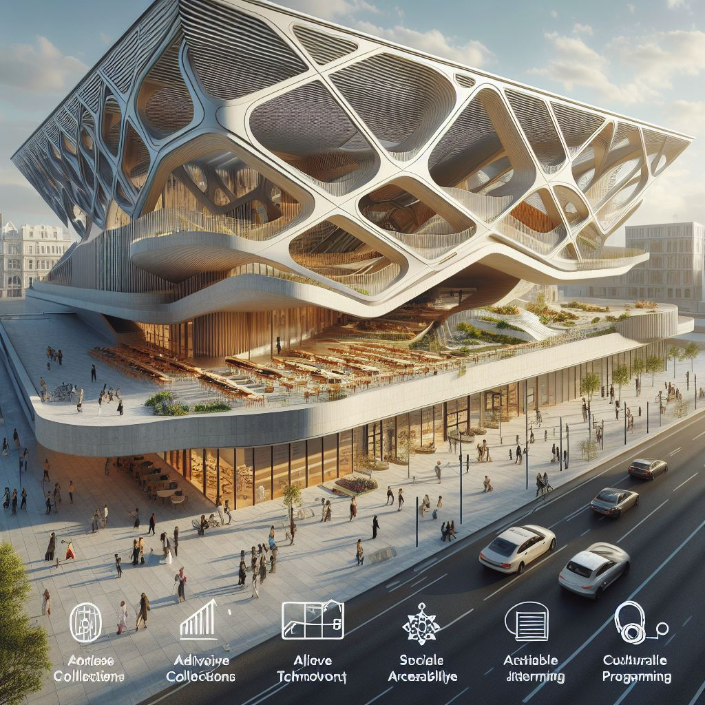
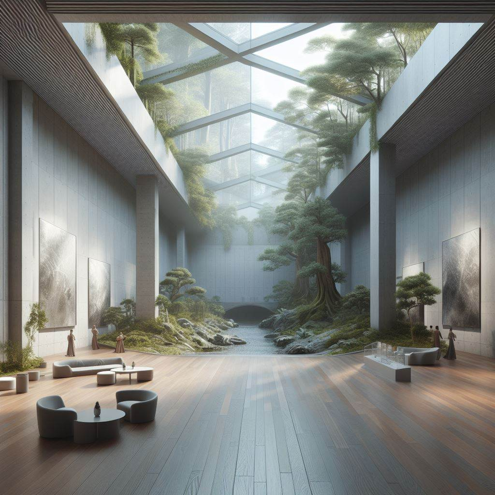

Nossos Projetos
Residencial Yga
Imagine um lar onde o design moderno encontra a harmonia da natureza, onde cada amanhecer traz vistas panorâmicas de uma cidade vibrante e cada entardecer revela o tranquilo abraço do parque natural. Apresento a você o Residencial dos Sonhos, uma obra-prima arquitetônica que redefine o significado de luxo e sustentabilidade.
Características Exclusivas:
Sustentabilidade Moderna:
Com painéis solares no telhado, este residencial não só reduz a pegada de carbono, mas também promove uma vida energeticamente eficiente.
Design Inovador:
A fusão de arquitetura contemporânea com jardins suspensos cria um refúgio urbano que é um espetáculo para os olhos e a alma.
Luxo Espacial:
Espaços amplos com acabamentos de alta qualidade, oferecendo o máximo conforto e uma estética elegante. Cada unidade é uma celebração do espaço e do design, com interiores meticulosamente planejados para maximizar a luz natural e a ventilação. Os terraços exuberantes são o seu jardim privativo, onde você pode relaxar ou entreter convidados, desfrutando da beleza do seu entorno. Este é o momento de investir em um estilo de vida que equilibra perfeitamente o luxo com a responsabilidade ambiental. Adquira sua unidade no Residencial dos Sonhos e transforme a maneira como você vive. Entre em contato para saber mais sobre como você pode chamar este paraíso de ‘lar’
 Projeto 2
Descubra a casa dos seus sonhos, onde cada detalhe foi cuidadosamente pensado para oferecer um estilo de vida sustentável e luxuoso. Esta residência moderna não é apenas um lugar para morar, é uma declaração de elegância e consciência ambiental.
Características Destacadas:
Energia Solar:
Equipada com painéis solares de última geração, esta casa aproveita o poder do sol para reduzir as contas de energia e a pegada de carbono.
Design Transparente:
As grandes paredes de vidro não só proporcionam uma abundância de luz natural, mas também oferecem vistas deslumbrantes do ambiente natural circundante.
Espaço e Conforto:
Interiores espaçosos e bem iluminados, com uma decoração que reflete sofisticação e conforto moderno.
Paisagismo Exuberante:
Jardins meticulosamente planejados que complementam a piscina cristalina, criando um oásis de tranquilidade.
Sustentabilidade Integrada:
Tanques de armazenamento inteligentes para coleta de água da chuva, reduzindo o consumo de água e aumentando a eficiência. Esta casa é uma obra-prima arquitetônica que promete um futuro mais verde e um presente de puro luxo. Com um equilíbrio perfeito entre design e funcionalidade, ela é o lugar ideal para criar memórias duradouras. Não perca a chance de possuir essa maravilha moderna. Entre em contato agora e dê o primeiro passo para uma vida extraordinária!.


Metropolitan art museum
Este monumento é uma celebração da inovação e da sustentabilidade, refletindo nosso compromisso com a construção responsável e o respeito pelo meio ambiente. A estrutura apresenta uma fachada geométrica marcante, que não só define sua estética moderna, mas também contribui para a eficiência energética do edifício. O uso de materiais sustentáveis e tecnologias de construção avançadas minimiza o impacto ambiental, enquanto maximiza a durabilidade e o conforto dos ocupantes. A integração de espaços verdes e áreas de convívio ao ar livre promove a biodiversidade e oferece aos visitantes um refúgio tranquilo da agitação urbana. O design inteligente permite a entrada de luz natural, reduzindo a necessidade de iluminação artificial e promovendo o bem-estar dos usuários. Além disso, o monumento serve como um ponto de encontro social, enriquecendo a comunidade com programação cultural e espaços para interação social. É um exemplo de como a arquitetura pode ser ao mesmo tempo bela, funcional e gentil com o planeta.
Características Sustentáveis:
Fachada Geométrica:
Otimiza o uso de energia e reduz o desperdício.
Espaços Verdes:
Promove a biodiversidade e oferece áreas de lazer.
Materiais Sustentáveis:
Reduz o impacto ambiental e aumenta a durabilidade.
Luz Natural:
Diminui a dependência de energia elétrica e melhora o ambiente interno.
Programação Cultural:
Enriquece a vida cultural e social da comunidade. Este monumento não é apenas um marco arquitetônico, mas também um símbolo do nosso compromisso com a construção de um futuro mais verde e sustentável.
 